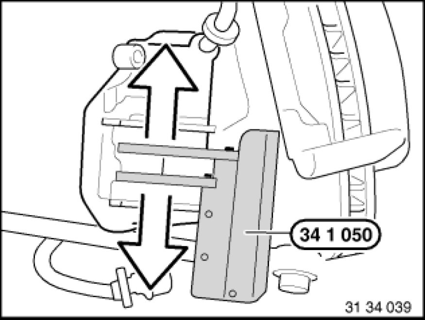

Removing and Installing/Replacing Brake Pads on Both Rear Disc Brakes
34 21 200 - Removing and installing/replacing both rear disc brakes

Special tools required:
- 34 1 050 34 1 050 Fixture
- 34 1 280 34 1 280 Sliding Caliper

Important!
The brake pad wear sensor must be replaced once it has been removed (brake pad wear sensor loses its retention capability in the brake pad).
So as not to damage the surface coating, if possible do not mechanically clean the guide surfaces for the brake pads on the brake caliper holder. Instead, clean with brake cleaner BMW part no. 83 19 2 147 681 and apply a thin coating of Never Seez Compound brake pad paste BMW part no. 83 23 9 407 830.

Necessary preliminary tasks:
- Remove wheels Removing or Installing Front or Rear Wheel
Remove cover plug (1).
Right side:
Disconnect plug connection for brake pad wear sensor.
If necessary, replace brake pad wear sensor.
Unscrew guide bolts (2).
Installation Note:
Only clean guide screws; do not grease.
Check threads.
Replace all guide screws which are not in perfect condition.
Tightening torque 34 21 5AZ 34 21 Rear Brake.
Lift out retaining spring (3).
Withdraw brake caliper backwards.

Important!
When turning back the piston, watch the brake-fluid level in the expansion tank, as overflowing brake fluid will destroy the paintwork.
Turn piston fully back with special tool 34 1 050 34 1 050 Fixture.
Important!
Mark any worn brake pads.
In the event of one-sided brake pad wear, do not change brake pads round.
Remove outer brake pad.
Inner brake pad is located with its spring in the piston.
Installation Note:
Observe minimum thickness of brake pads [1][2]34 21 Rear Brake.
Clean brake pads.
Do not grease backs of brake pads sleeve.

Check minimum brake disc thickness:
- Position special tool 34 1 280 34 1 280 Sliding Caliper at three measuring points in area (1) and measure.
- Compare measurement result and lowest value with setpoint value [1][2]34 21 Rear Brake.
Important!
New brake pads may only be installed if the brake disc thickness is greater than or equal to the minimum brake disc thickness [1][2]34 21 Rear Brake (MIN TH) (not incl. M vehicles).
In the case of M vehicles and perforated brake discs, new brake pads may only be installed if the brake disc thickness is greater than the minimum brake disc thickness [1][2]34 21 Rear Brake (MIN TH).
Note:
The minimum brake disc thickness is configured in such a way that it lasts the life of a further set of brake pads (does not apply to M vehicles and perforated brake discs).
Important!
Dust sleeve must not come into contact with anti-squeak compound as this may cause the dust sleeve to swell.
Check dust sleeve (1) for damage and replace if necessary.
Clean contact surface (2) of brake piston with brake cleaner and apply a thin coating of brake pad paste.
Clean contact surfaces (1...2) of brake pad tee heads/brake caliper housing with brake cleaner and apply a thin coating of brake pad paste.
Clean contact surface (3) of brake caliper with brake cleaner and apply a thin coating of brake pad paste.
So as not to damage the surface coating, if possible do not mechanically clean the guide surfaces for the brake pads on the brake caliper holder. Instead, clean with brake cleaner and apply a thin coating of Never Seez Compound brake pad paste.
After installation:
- Fully depress brake pedal several times so that brake pads contact brake discs.
- When installing new brake pads at front and rear axles, brake fluid level must be brought up to "MAX" marking.
- Read and comply with notes on braking in new brake discs / brake pads Procedures.